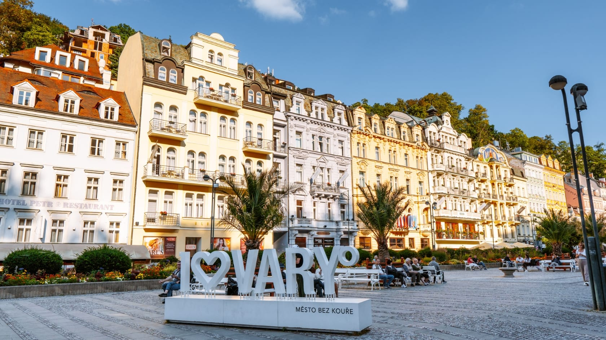

Karlovy Vary is one of the most famous spa cities in Europe, known for its thermal springs, elegant architecture, and long-standing cultural traditions. The city has attracted visitors for centuries who seek relaxation, health treatment, and a unique historical atmosphere.
The spa tradition of Karlovy Vary is based on natural mineral springs and professional spa treatments. This heritage has shaped the city’s development and international reputation.
Cultural events, music performances, and international festivals play an important role in everyday life. The city is especially well known for its long-standing film festival tradition.
Surrounded by forests and hills, Karlovy Vary offers a harmonious connection between urban life and nature. Walking paths and scenic viewpoints enhance the visitor experience.